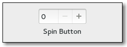

Gtk.SpinButton
Example
Methods
| Inherited: | Gtk.Entry (75), Gtk.Widget (256), GObject.Object (33), Gtk.Buildable (10), Gtk.CellEditable (3), Gtk.Editable (13), Gtk.Orientable (2) |
|---|
| static | new(adjustment, climb_rate, digits) |
| static | new_with_range(min, max, step) |
| configure(adjustment, climb_rate, digits) | |
| get_adjustment() | |
| get_digits() | |
| get_increments() | |
| get_numeric() | |
| get_range() | |
| get_snap_to_ticks() | |
| get_update_policy() | |
| get_value() | |
| get_value_as_int() | |
| get_wrap() | |
| set_adjustment(adjustment) | |
| set_digits(digits) | |
| set_increments(step, page) | |
| set_numeric(numeric) | |
| set_range(min, max) | |
| set_snap_to_ticks(snap_to_ticks) | |
| set_update_policy(policy) | |
| set_value(value) | |
| set_wrap(wrap) | |
| spin(direction, increment) | |
| update() |
Virtual Methods
| Inherited: | Gtk.Entry (12), Gtk.Widget (82), GObject.Object (7), Gtk.Buildable (10), Gtk.CellEditable (3), Gtk.Editable (10) |
|---|
| do_change_value(scroll) | |
| do_input(new_value) | |
| do_output() | |
| do_value_changed() | |
| do_wrapped() |
Properties
| Inherited: | Gtk.Entry (49), Gtk.Widget (38), Gtk.CellEditable (1), Gtk.Orientable (1) |
|---|
| Name | Type | Flags | Short Description |
|---|---|---|---|
| adjustment | Gtk.Adjustment | r/w | The adjustment that holds the value of the spin button |
| climb-rate | float | r/w | The acceleration rate when you hold down a button |
| digits | int | r/w | The number of decimal places to display |
| numeric | bool | r/w | Whether non-numeric characters should be ignored |
| snap-to-ticks | bool | r/w | Whether erroneous values are automatically changed to a spin button’s nearest step increment |
| update-policy | Gtk.SpinButtonUpdatePolicy | r/w | Whether the spin button should update always, or only when the value is legal |
| value | float | r/w | Reads the current value, or sets a new value |
| wrap | bool | r/w | Whether a spin button should wrap upon reaching its limits |
Style Properties
| Inherited: | Gtk.Entry (4), Gtk.Widget (17) |
|---|
| Name | Type | Default | Flags | Short Description |
|---|---|---|---|---|
| shadow-type | Gtk.ShadowType | Gtk.ShadowType.IN | r | Style of bevel around the spin button |
Signals
| Inherited: | Gtk.Entry (13), Gtk.Widget (69), GObject.Object (1), Gtk.CellEditable (2), Gtk.Editable (3) |
|---|
| Name | Short Description |
|---|---|
| change-value | The ::change-value signal is a [keybinding signal][GtkBindingSignal] which gets emitted when the user initiates a value change. |
| input | The ::input signal can be used to influence the conversion of the users input into a double value. |
| output | The ::output signal can be used to change to formatting of the value that is displayed in the spin buttons entry. |
| value-changed | The ::value-changed signal is emitted when the value represented by spinbutton changes. |
| wrapped | The ::wrapped signal is emitted right after the spinbutton wraps from its maximum to minimum value or vice-versa. |
Fields
| Inherited: | Gtk.Entry (1), Gtk.Widget (1), GObject.InitiallyUnowned (3), GObject.Object (3) |
|---|
| Name | Type | Access | Description |
|---|---|---|---|
| entry | Gtk.Entry | r |
Class Details
- class Gtk.SpinButton(**kwargs)
Bases: Gtk.Entry, Gtk.Orientable
A Gtk.SpinButton is an ideal way to allow the user to set the value of some attribute. Rather than having to directly type a number into a Gtk.Entry, Gtk.SpinButton allows the user to click on one of two arrows to increment or decrement the displayed value. A value can still be typed in, with the bonus that it can be checked to ensure it is in a given range.
The main properties of a Gtk.SpinButton are through an adjustment. See the Gtk.Adjustment section for more details about an adjustment’s properties.
## Using a Gtk.SpinButton to get an integer
<!-- language="C" --> // Provides a function to retrieve an integer value from a GtkSpinButton // and creates a spin button to model percentage values. gint grab_int_value (GtkSpinButton *button, gpointer user_data) { return gtk_spin_button_get_value_as_int (button); } void create_integer_spin_button (void) { GtkWidget *window, *button; GtkAdjustment *adjustment; adjustment = gtk_adjustment_new (50.0, 0.0, 100.0, 1.0, 5.0, 0.0); window = gtk_window_new (GTK_WINDOW_TOPLEVEL); gtk_container_set_border_width (GTK_CONTAINER (window), 5); // creates the spinbutton, with no decimal places button = gtk_spin_button_new (adjustment, 1.0, 0); gtk_container_add (GTK_CONTAINER (window), button); gtk_widget_show_all (window); }
## Using a Gtk.SpinButton to get a floating point value
<!-- language="C" --> // Provides a function to retrieve a floating point value from a // GtkSpinButton, and creates a high precision spin button. gfloat grab_float_value (GtkSpinButton *button, gpointer user_data) { return gtk_spin_button_get_value (button); } void create_floating_spin_button (void) { GtkWidget *window, *button; GtkAdjustment *adjustment; adjustment = gtk_adjustment_new (2.500, 0.0, 5.0, 0.001, 0.1, 0.0); window = gtk_window_new (GTK_WINDOW_TOPLEVEL); gtk_container_set_border_width (GTK_CONTAINER (window), 5); // creates the spinbutton, with three decimal places button = gtk_spin_button_new (adjustment, 0.001, 3); gtk_container_add (GTK_CONTAINER (window), button); gtk_widget_show_all (window); }
- static new(adjustment, climb_rate, digits)
Parameters: - adjustment (Gtk.Adjustment or None) – the Gtk.Adjustment object that this spin button should use, or None
- climb_rate (float) – specifies how much the spin button changes when an arrow is clicked on
- digits (int) – the number of decimal places to display
Returns: The new spin button as a Gtk.Widget
Return type: Creates a new Gtk.SpinButton.
- static new_with_range(min, max, step)
Parameters: Returns: The new spin button as a Gtk.Widget
Return type: This is a convenience constructor that allows creation of a numeric Gtk.SpinButton without manually creating an adjustment. The value is initially set to the minimum value and a page increment of 10 * step is the default. The precision of the spin button is equivalent to the precision of step.
Note that the way in which the precision is derived works best if step is a power of ten. If the resulting precision is not suitable for your needs, use Gtk.SpinButton.set_digits () to correct it.
- configure(adjustment, climb_rate, digits)
Parameters: - adjustment (Gtk.Adjustment or None) – a Gtk.Adjustment
- climb_rate (float) – the new climb rate
- digits (int) – the number of decimal places to display in the spin button
Changes the properties of an existing spin button. The adjustment, climb rate, and number of decimal places are all changed accordingly, after this function call.
- get_adjustment()
Returns: the Gtk.Adjustment of spin_button Return type: Gtk.Adjustment Get the adjustment associated with a Gtk.SpinButton
- get_digits()
Returns: the current precision Return type: int Fetches the precision of spin_button. See Gtk.SpinButton.set_digits ().
- get_increments()
Returns: step: location to store step increment, or None page: location to store page increment, or None Return type: (step: float, page: float) Gets the current step and page the increments used by spin_button. See Gtk.SpinButton.set_increments ().
- get_numeric()
Returns: True if only numeric text can be entered Return type: bool Returns whether non-numeric text can be typed into the spin button. See Gtk.SpinButton.set_numeric ().
- get_range()
Returns: min: location to store minimum allowed value, or None max: location to store maximum allowed value, or None Return type: (min: float, max: float) Gets the range allowed for spin_button. See Gtk.SpinButton.set_range ().
- get_snap_to_ticks()
Returns: True if values are snapped to the nearest step Return type: bool Returns whether the values are corrected to the nearest step. See Gtk.SpinButton.set_snap_to_ticks ().
- get_update_policy()
Returns: the current update policy Return type: Gtk.SpinButtonUpdatePolicy Gets the update behavior of a spin button. See Gtk.SpinButton.set_update_policy ().
- get_value()
Returns: the value of spin_button Return type: float Get the value in the spin_button.
- get_value_as_int()
Returns: the value of spin_button Return type: int Get the value spin_button represented as an integer.
- get_wrap()
Returns: True if the spin button wraps around Return type: bool Returns whether the spin button’s value wraps around to the opposite limit when the upper or lower limit of the range is exceeded. See Gtk.SpinButton.set_wrap ().
- set_adjustment(adjustment)
Parameters: adjustment (Gtk.Adjustment) – a Gtk.Adjustment to replace the existing adjustment Replaces the Gtk.Adjustment associated with spin_button.
- set_digits(digits)
Parameters: digits (int) – the number of digits after the decimal point to be displayed for the spin button’s value Set the precision to be displayed by spin_button. Up to 20 digit precision is allowed.
- set_increments(step, page)
Parameters: Sets the step and page increments for spin_button. This affects how quickly the value changes when the spin button’s arrows are activated.
- set_numeric(numeric)
Parameters: numeric (bool) – flag indicating if only numeric entry is allowed Sets the flag that determines if non-numeric text can be typed into the spin button.
- set_range(min, max)
Parameters: Sets the minimum and maximum allowable values for spin_button.
If the current value is outside this range, it will be adjusted to fit within the range, otherwise it will remain unchanged.
- set_snap_to_ticks(snap_to_ticks)
Parameters: snap_to_ticks (bool) – a flag indicating if invalid values should be corrected Sets the policy as to whether values are corrected to the nearest step increment when a spin button is activated after providing an invalid value.
- set_update_policy(policy)
Parameters: policy (Gtk.SpinButtonUpdatePolicy) – a Gtk.SpinButtonUpdatePolicy value Sets the update behavior of a spin button. This determines whether the spin button is always updated or only when a valid value is set.
- set_value(value)
Parameters: value (float) – the new value Sets the value of spin_button.
- set_wrap(wrap)
Parameters: wrap (bool) – a flag indicating if wrapping behavior is performed Sets the flag that determines if a spin button value wraps around to the opposite limit when the upper or lower limit of the range is exceeded.
- spin(direction, increment)
Parameters: - direction (Gtk.SpinType) – a Gtk.SpinType indicating the direction to spin
- increment (float) – step increment to apply in the specified direction
Increment or decrement a spin button’s value in a specified direction by a specified amount.
- update()
Manually force an update of the spin button.
- do_change_value(scroll)
Type: virtual Parameters: scroll (Gtk.ScrollType) –
- do_output()
Type: virtual Return type: int
- do_value_changed()
Type: virtual
- do_wrapped()
Type: virtual
Signal Details
- Gtk.SpinButton.signals.change_value(spin_button, scroll)
Signal Name: change-value
Flags: Parameters: - spin_button (Gtk.SpinButton) – The object which received the signal
- scroll (Gtk.ScrollType) – a Gtk.ScrollType to specify the speed and amount of change
The ::change-value signal is a [keybinding signal][GtkBindingSignal] which gets emitted when the user initiates a value change.
Applications should not connect to it, but may emit it with GObject.signal_emit_by_name () if they need to control the cursor programmatically.
The default bindings for this signal are Up/Down and PageUp and/PageDown.
- Gtk.SpinButton.signals.input(spin_button)
Signal Name: input Flags: RUN_LAST Parameters: spin_button (Gtk.SpinButton) – The object which received the signal Returns: True for a successful conversion, False if the input was not handled, and Gtk.INPUT_ERROR if the conversion failed. new_value: return location for the new value Return type: (int, new_value: float) The ::input signal can be used to influence the conversion of the users input into a double value. The signal handler is expected to use Gtk.Entry.get_text () to retrieve the text of the entry and set new_value to the new value.
The default conversion uses GLib.strtod ().
- Gtk.SpinButton.signals.output(spin_button)
Signal Name: output Flags: RUN_LAST Parameters: spin_button (Gtk.SpinButton) – The object which received the signal Returns: True if the value has been displayed Return type: bool The ::output signal can be used to change to formatting of the value that is displayed in the spin buttons entry.
<!-- language="C" --> // show leading zeros static gboolean on_output (GtkSpinButton *spin, gpointer data) { GtkAdjustment *adjustment; gchar *text; int value; adjustment = gtk_spin_button_get_adjustment (spin); value = (int)gtk_adjustment_get_value (adjustment); text = g_strdup_printf ("%02d", value); gtk_entry_set_text (GTK_ENTRY (spin), text); g_free (text); return TRUE; }
- Gtk.SpinButton.signals.value_changed(spin_button)
Signal Name: value-changed Flags: RUN_LAST Parameters: spin_button (Gtk.SpinButton) – The object which received the signal The ::value-changed signal is emitted when the value represented by spinbutton changes. Also see the Gtk.SpinButton ::output signal.
- Gtk.SpinButton.signals.wrapped(spin_button)
Signal Name: wrapped Flags: RUN_LAST Parameters: spin_button (Gtk.SpinButton) – The object which received the signal The ::wrapped signal is emitted right after the spinbutton wraps from its maximum to minimum value or vice-versa.
New in version 2.10.
Property Details
- Gtk.SpinButton.props.adjustment
Name: adjustment Type: Gtk.Adjustment Default Value: None Flags: r/w The adjustment that holds the value of the spin button
- Gtk.SpinButton.props.climb_rate
Name: climb-rate Type: float Default Value: 0.0 Flags: r/w The acceleration rate when you hold down a button
- Gtk.SpinButton.props.digits
Name: digits Type: int Default Value: 0 Flags: r/w The number of decimal places to display
- Gtk.SpinButton.props.numeric
Name: numeric Type: bool Default Value: False Flags: r/w Whether non-numeric characters should be ignored
- Gtk.SpinButton.props.snap_to_ticks
Name: snap-to-ticks Type: bool Default Value: False Flags: r/w Whether erroneous values are automatically changed to a spin button’s nearest step increment
- Gtk.SpinButton.props.update_policy
Name: update-policy Type: Gtk.SpinButtonUpdatePolicy Default Value: Gtk.SpinButtonUpdatePolicy.ALWAYS Flags: r/w Whether the spin button should update always, or only when the value is legal
- Gtk.SpinButton.props.value
Name: value Type: float Default Value: 0.0 Flags: r/w Reads the current value, or sets a new value